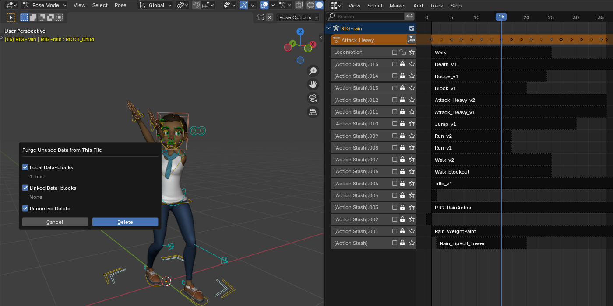
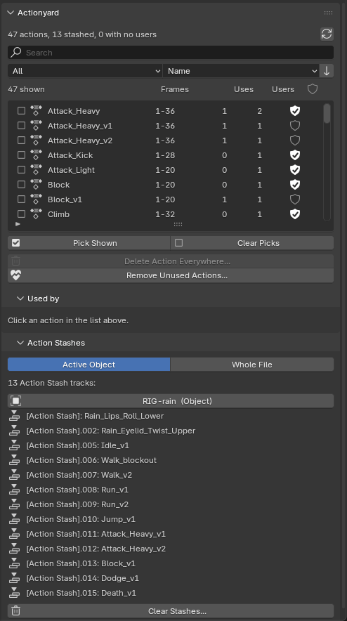
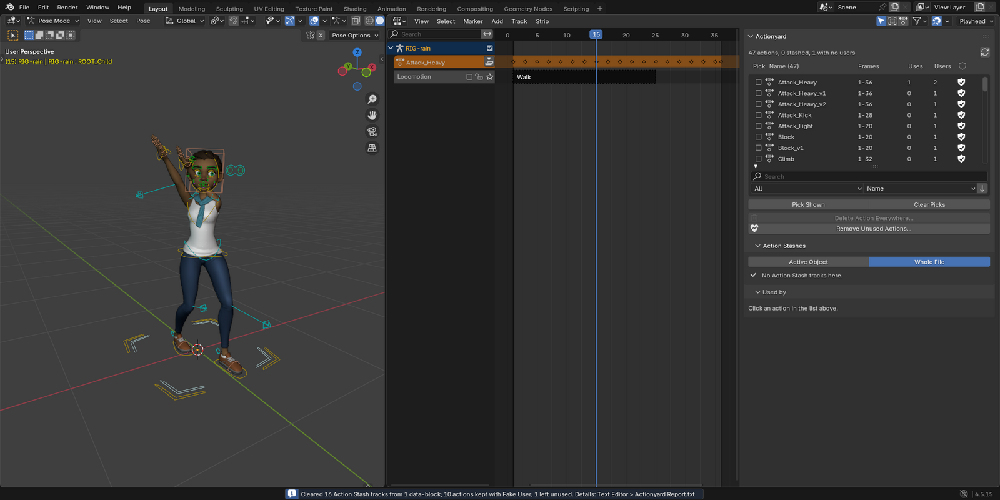
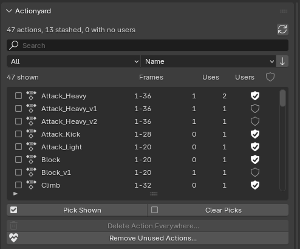

Actionyard for Blender
![Blender 4.5 with Blender Studio's Rain in her Attack_Heavy pose on the left; in the middle her NLA editor, with the active Attack_Heavy action, a Locomotion track and a column of 16 [Action Stash] tracks below it holding Death_v1, Dodge_v1, Block_v1, Attack_Heavy_v2, Attack_Heavy_v1, Jump_v1, Run_v2, Run_v1, Walk_v2, Walk_blockout, Idle_v1 and older strips; on the right the Actionyard sidebar tab, filtered to Stashed, reading '47 actions, 13 stashed, 0 with no users' above the list of stashed actions and the Action Stashes panel](img/rain-stash-column.png)
When many stashed actions exist, they clutter the NLA editor, and Purge won't remove them. Actionyard lists every action with where it is used, and clears the stashes you pick, previewed first.
$12, one-time, every future version included, source included (GPL-3.0-or-later). For Blender 4.4 and later; tested on Blender 4.4, 4.5 LTS and 5.2 LTS.
Polar checkout · 14-day refund · no license check · details
Above: Blender Studio's Rain with a game move set, in Blender 4.5 LTS with Actionyard 1.1.0. Each older take sits on its own [Action Stash] track, and the tab lists the 13 stashed actions.
How these images were made
The character is Rain, Blender Studio's free production rig (CC BY 4.0, credit below), in her own file as downloaded from studio.blender.org, with its 19 face actions and their Action constraints. Her file already holds 5 [Action Stash] tracks. We added a game move set keyed on her controls: 17 final actions (Idle, Walk, Run, Sprint, Jump, three attacks, Block, Dodge and more), each kept with Fake User, and 11 older takes, each stashed with Blender's own Stash operator, as New Action does. The result is 47 actions and 16 [Action Stash] tracks. Every image and GIF on this page is a capture of a real Blender 4.5.15 LTS window on Linux at 1920x960, with Actionyard 1.1.0 installed from its zip through Blender's extension installer. The mouse and keyboard input is scripted. The GIFs are cut from screen recordings of the same session, in real time. A check after every step compared the file's data with what the screen shows: 21 checks, all passed.

Clean Up > Purge Unused Data dialog over Rain's viewport: Local Data-blocks: 1 Text; Linked Data-blocks: None; Recursive Delete; Cancel and Delete. Beside it, her NLA editor with the column of 16 [Action Stash] tracks" width="1400" height="700" loading="lazy">
What it does
Actionyard is a sidebar tab in the NLA editor and the Dope Sheet.
- One list of every action. Each action in the file with its frame range, how many places use it, Blender's user count and a Fake User toggle. Search by name, filter to Stashed, No users, Fake User only or Used, and sort by name or by number of uses. A line above the list counts the actions, the stashed ones and the ones with no users.
- Used by: every place, with the slot. Click an action to see each place that uses it: the active action of an object, shape keys or material; an NLA track, with the track and strip names; an Action Stash; or an Action constraint, with the armature, bone and constraint names. Click a row, and that object is selected and made active.
- Clear Stashes, previewed. For the active object or the whole file. Before anything changes, the preview says how many stash tracks go and from how many objects, which actions are on them, and, for each action left unused, whether to keep it in the file with Fake User (the default) or let it go. A stash track you have unmuted, so it plays, is marked and starts unticked. Only Action Stash tracks are removed; your other NLA tracks stay, muted or not. One Ctrl+Z undoes it all.
- Delete Action Everywhere. Tick the actions you want gone. The preview lists every place that will lose each one; then they are removed from all of those places and from the file in one undo step, with no empty stash tracks left behind.
- Remove Unused Actions. Deletes actions with no users, keeps Fake User actions unless you tick them, and always keeps pose-library assets.
- Works with linked and overridden rigs. Linked data, and everything a library override takes from its library file, is listed with a lock and never changed. Stash tracks you added on the override in your own file are yours to clear, as they are in Blender's NLA editor.
- A written record. Every operation says what it changed in the status bar and appends the details to a text block called "Actionyard Report".
In Blender, for real
Captured on Rain's file in Blender 4.5.15 LTS with Actionyard 1.1.0. The panel and dialog captures are shown at real size on a wide screen; tap an image for the full capture.

![The Clear Stashes dialog at real size: 'Removes 13 Action Stash tracks from 1 data-block. Only Action Stash tracks are removed; other NLA tracks stay as they are.' Actions on these tracks: Rain_Lips_Roll_Lower still used by 15 other places, no change; Rain_Eyelid_Twist_Upper still used by 6 other places, no change; Idle_v1 keep in the file with Fake User, kept; Walk_blockout unticked, becomes unused; Walk_v2, Run_v1, Run_v2, Jump_v1, Attack_Heavy_v1, Attack_Heavy_v2, Block_v1, Dodge_v1 and Death_v1 kept. Then each of the 13 Action Stash tracks with its own tick](img/clear-stashes-preview.png)


Character: Rain Rig (CC) Blender Foundation | studio.blender.org, used under CC BY 4.0. We added the game actions and the stashed takes. Rain is not included with Actionyard.
Blender's way against Actionyard
Measured on a file with two rigs, each with 5 takes stashed by Blender's Stash operator and 1 active take, and one stash on a mesh's shape keys: 13 actions and 11 [Action Stash] tracks to begin with. Blender 4.5 LTS and 5.2 LTS gave the same numbers.
| What you do | Actions left | [Action Stash] tracks left | Strips with no action |
|---|---|---|---|
| Blender: Purge | 13 | 11 | 0 |
| Blender: delete the 11 stashed actions as data-blocks (what the Outliner's Delete does) | 2 | 11 | 11 |
| Actionyard: Clear Stashes, Whole File, defaults, then Purge | 13 (every take kept with Fake User) | 0 | 0 |
| Actionyard: Clear Stashes, Whole File, keep unticked, then Purge | 2 | 0 | 0 |
| Actionyard: Delete Action Everywhere on the same 11 | 2 | 0 | 0 |
On Rain's file, in the real Blender window: Purge deleted 1 text block and left all 47 actions and 16 stash tracks. Clear Stashes (Whole File, one take let go) removed the 13 stash tracks that hold actions, left the Locomotion track and all 47 actions in place, kept 10 takes with Fake User and left 1 with no users. One Ctrl+Z brought every track and every Fake User flag back.
Big files: a file with 12 rigs of 200 bones, 800 actions and 792 NLA tracks is scanned in under half a second in our test suite, on every tested Blender version.
Details
- Buying: secure checkout by Polar, which delivers the zip; the zip includes the full source. Actionyard has no license check and no network access. If it doesn't work as described on your file and we can't fix it, email us within 14 days of purchase for a full refund (terms). Questions first? support@ochrestack.com.
- $12 once. Every future version of Actionyard is included: no subscription, no renewal, no paid version 2.
- Requires Blender 4.4 or newer (slotted actions). Tested on Blender 4.4, 4.5 LTS and 5.2 LTS, on Linux; checked in the real Blender 4.5 LTS and 5.2 LTS interface. Python only, with no compiled parts, but Windows and macOS have not been tested yet.
- GPL-3.0-or-later. Full source code included with your purchase.
- Privacy: Actionyard makes no network calls and collects nothing: no telemetry, no analytics, no update checks. It changes only the open .blend file, and only when you run one of its operators.
- Support: support@ochrestack.com. A small .blend that shows the problem helps most.
Documentation
The manual (README.md) is inside the zip: open the zip to read it, but install the zip itself, as it is. A one-page guide is online: Actionyard quick start.
Install
- Download
actionyard-1.1.0.zip. Do not unzip it. - In Blender 4.4 or newer, open Edit > Preferences > Get Extensions.
- Open the drop-down menu (⌄) at the top right, choose Install from Disk... and pick the zip.
- In the NLA editor or the Dope Sheet, press N and open the Actionyard tab.
If Get Extensions asks about internet access, Continue Offline is fine: Actionyard needs none.
Words used on this page
- NLA: Blender's Nonlinear Animation editor, where an object's actions sit on tracks.
- Action Stash: a muted NLA track named "[Action Stash]" that keeps an action in the file. Blender's Stash operator makes one, and so does New Action for the previous take.
- Fake User: a flag that keeps a data-block, such as an action, in the file when nothing else uses it.
- Slot: since Blender 4.4, one action can hold animation for several data-blocks, one slot each. Each Used by row names the slot it uses.
Known limits
- No onion skins and no channel locking. No action switching, frame-range setting, export, NLA merging or baking.
- A stash track whose strips have no action is not listed or cleared in 1.1.0. Blender leaves those behind when a stashed action is deleted the plain way; Rain's file comes with three. Delete them by hand in the NLA editor.
- Linked data, and what a library override takes from its library, is read-only: an action that such data uses is not deleted. Tracks you added on an override in your own file are not affected by this.
- Delete Action Everywhere leaves an action alone when one of its strips is on a locked NLA track; unlock the track first. Blender locks its own stash tracks, and those are still cleared.
- NLA tweak mode: exit it before clearing stashes or deleting actions on that object.
- A strip inside a meta strip loses its action but stays in the meta strip; Blender's Python API cannot remove it.
- What counts as a stash is Blender's own rule: a track name containing "[Action Stash]". A track you named that way yourself counts too, so check the preview.
- In a narrow sidebar the Uses column hides and very long names are cut; widen the sidebar.
- Not tested yet: Windows, macOS, and overrides of overrides (nested library overrides). English only.